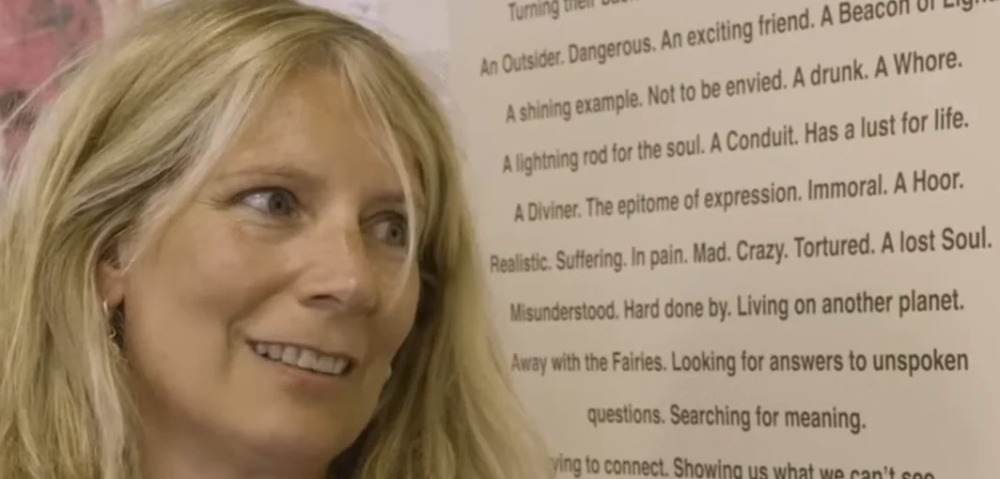
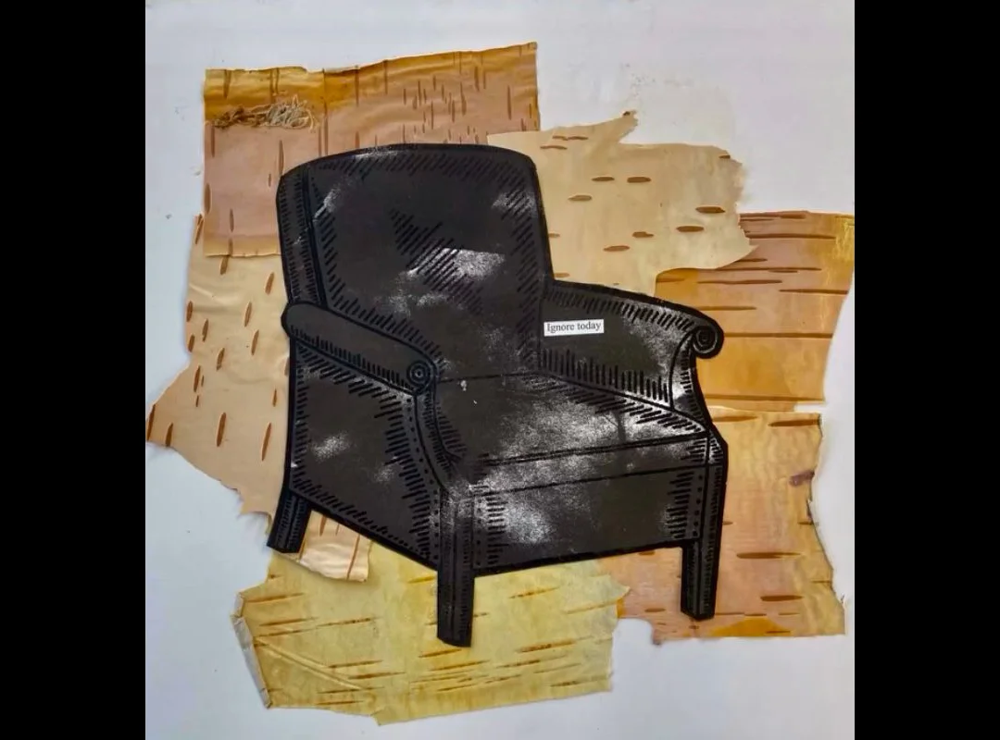

Mo Levy

Mo Levy is an Irish fine art printmaker and photographer whose work has been shown nationally and internationally. A graduate of Dún Laoghaire Institute of Art, Design & Technology (IADT), she has been a member of Dublin’s Black Church Print Studio since 1984, establishing a long-standing reputation in Ireland’s printmaking community.
Her practice spans screen printing, digital print, photography, and text-based art, exploring the intersections of architecture, the human psyche, and everyday life. Chairs often appear as visual and symbolic motifs, while text and language are used as central elements, adding conceptual and philosophical depth to her prints and photographs.
Levy has exhibited widely, from major gallery shows in Dublin to collaborative touring exhibitions, and her work has featured in print fairs and auctions. Highlights include the HALFTONE Print Fair in Dublin and the 16 – Travelling Exhibition of Prints. Her silkscreen print “Lovers Highlighted” (1986) has also been listed in Adam's Fine Art Auctioneers, adding to the documented record of her work.
Bog Birch

While at Cornafulla Micro Reserve, Mo Levy has created a new print: a black armchair foregrounded on a bed of peeled birch bark, inscribed with the text “ignore today.” The choice of birch—ephemeral yet generative—reflects the bog’s slow regeneration from an industrial peat site to emerging scrub. Birch trees are natural colonizers of degraded and cutover bogs, often marking the first stages of succession toward woodland. Their light, peeling bark fosters new life beneath and supports a layered ecosystem, even as their presence can present challenges for wetland restoration. In Levy’s work, the armchair becomes a contemplative “holding space,” inviting viewers to consider the delicate balance between neglect and renewal, loss and growth, and the subtle resilience inherent in both nature and human experience.